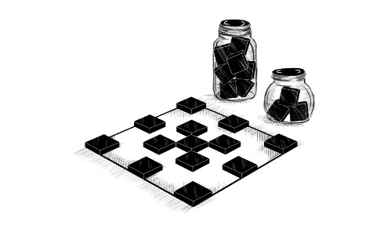
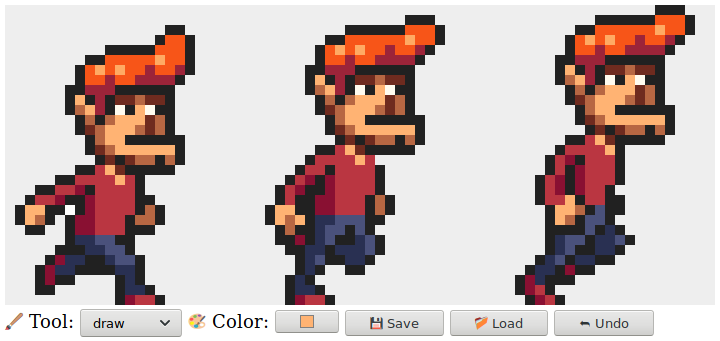
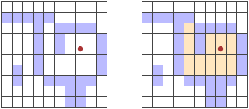
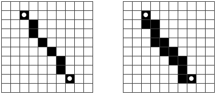

الفصل 19
مشروع: محرر فن البكسل
أنظر إلى الألوان الكثيرة أمامي. أنظر إلى لوحي الفارغ. ثم أحاول تطبيق الألوان ككلمات تصوغ القصائد، كنغمات تصوغ الموسيقى.
— خوان ميرو

تمنحك المادة التي وردت في الفصول السابقة كل العناصر التي تحتاجها لبناء تطبيق ويب أساسي. وفي هذا الفصل سنفعل ذلك بالضبط.
سيكون تطبيقنا برنامجًا لرسم البكسلات يتيح لك تعديل صورة بكسلًا بكسل عبر التعامل مع عرض مكبَّر لها يظهر شبكة من المربعات الملوّنة. يمكنك استخدام البرنامج لفتح ملفات صور، والخربشة عليها بالفأرة أو أي جهاز تأشير آخر، وحفظها. هكذا سيبدو:

الرسم على الحاسوب رائع. لا داعي للقلق بشأن المواد أو المهارة أو الموهبة. تبدأ فقط في التلطيخ وترى أين ينتهي بك الأمر.
المكوّنات
تعرض واجهة التطبيق عنصر <canvas> كبيرًا في الأعلى، وأسفله عدد من حقول النموذج. يرسم المستخدم على الصورة باختيار أداة من حقل <select> ثم النقر أو اللمس أو السحب عبر الـ Canvas. هناك أدوات لرسم بكسلات مفردة أو مستطيلات، ولملء منطقة، والتقاط لون من الصورة.
سنُنظّم واجهة المحرر على هيئة عدد من المكوّنات (components)، وهي كائنات مسؤولة عن جزء من DOM وقد تحتوي مكوّنات أخرى بداخلها.
تتكوّن حالة التطبيق من الصورة الحالية، والأداة المختارة، واللون المختار. سنرتب الأمور بحيث تعيش الحالة في قيمة واحدة، وتبني مكوّنات الواجهة مظهرها دائمًا على الحالة الحالية.
لنرى لماذا هذا مهم، لننظر إلى البديل — توزيع أجزاء الحالة في أنحاء الواجهة. إلى حد معين، هذا أسهل في البرمجة. يمكننا ببساطة إضافة حقل لون وقراءة قيمته عندما نحتاج معرفة اللون الحالي.
لكننا بعد ذلك نضيف منتقي الألوان — أداة تتيح لك النقر على الصورة لاختيار لون بكسل معين. ولكي يظل حقل اللون عارضًا اللون الصحيح، سيتعين على تلك الأداة أن تعرف أن حقل اللون موجود وأن تحدّثه كلما اختارت لونًا جديدًا. وإذا أضفت يومًا مكانًا آخر يُظهر اللون (ربما يُظهره مؤشر الفأرة)، فعليك تحديث شيفرة تغيير اللون لديك لتُبقي ذلك متزامنًا أيضًا.
فعليًا، يخلق هذا مشكلة يحتاج فيها كل جزء من الواجهة إلى معرفة كل الأجزاء الأخرى، وهو أمر غير معياري كثيرًا. وبالنسبة لتطبيقات صغيرة كالتي في هذا الفصل، قد لا تكون مشكلة. أما في المشاريع الأكبر، فقد يتحول إلى كابوس حقيقي.
لتجنب هذا الكابوس من حيث المبدأ، سنكون صارمين بشأن تدفق البيانات. هناك حالة، وتُرسَم الواجهة بناءً على تلك الحالة. وقد يستجيب مكوّن واجهة لإجراءات المستخدم بتحديث الحالة، وعندئذٍ تُتاح للمكوّنات فرصة مزامنة نفسها مع هذه الحالة الجديدة.
عمليًا، يُعدّ كل مكوّن بحيث إن أُعطي حالة جديدة، أخطر مكوّناته الفرعية أيضًا، بالقدر الذي يحتاج فيه الأمر إلى تحديث. إعداد هذا أمر متعب قليلًا. وجعل هذا أكثر ملاءمة هو الميزة الرئيسية التي تُروَّج بها كثير من مكتبات برمجة المتصفح. لكن بالنسبة لتطبيق صغير كهذا، يمكننا فعل ذلك دون مثل هذه البنية التحتية.
تُمثَّل التحديثات على الحالة بكائنات سنسميها إجراءات (actions). وقد تنشئ المكوّنات مثل هذه الإجراءات وترسلها (dispatch) — أي تعطيها لدالة مركزية لإدارة الحالة. تحسب تلك الدالة الحالة التالية، وبعدها تحدّث مكوّنات الواجهة نفسها لتطابق هذه الحالة الجديدة.
نحن نأخذ المهمة الفوضوية المتمثلة في تشغيل واجهة مستخدم ونطبّق عليها بنية. ومع أن الأجزاء المتعلقة بـ DOM لا تزال مليئة بالتأثيرات الجانبية، فإنها تسندها بنية مفهومية بسيطة: دورة تحديث الحالة. تحدد الحالة شكل DOM، والسبيل الوحيد الذي يمكن لأحداث DOM أن تغيّر به الحالة هو إرسال إجراءات إلى الحالة.
هناك كثير من الصور المختلفة لهذا النهج، لكل منها مزاياه ومشكلاته، لكن فكرتها المركزية واحدة: ينبغي أن تمر تغييرات الحالة عبر قناة واحدة محددة جيدًا، لا أن تحدث في كل مكان.
ستكون مكوّناتنا أصنافًا تتوافق مع واجهة. يُعطى بانيها حالة — قد تكون حالة التطبيق كلها أو قيمة أصغر إن لم تكن بحاجة إلى الوصول إلى كل شيء — ويستخدمها لبناء خاصية dom. هذا هو عنصر DOM الذي يمثل المكوّن. وستأخذ معظم البانيات أيضًا بعض القيم الأخرى التي لن تتغير مع الوقت، مثل الدالة التي يمكنها استخدامها لإرسال إجراء.
لكل مكوّن طريقة syncState تُستخدم لمزامنته مع قيمة حالة جديدة. تأخذ الطريقة معطى واحدًا هو الحالة، وهي من النوع نفسه للمعطى الأول لبانيها.
الحالة
ستكون حالة التطبيق كائنًا له خصائص picture وtool وcolor. والـ picture نفسه كائن يخزّن عرض الصورة وارتفاعها ومحتوى بكسلاتها. وتُخزَّن البكسلات في مصفوفة واحدة، صفًا صفًا، من الأعلى إلى الأسفل.
class Picture {
constructor(width, height, pixels) {
this.width = width;
this.height = height;
this.pixels = pixels;
}
static empty(width, height, color) {
let pixels = new Array(width * height).fill(color);
return new Picture(width, height, pixels);
}
pixel(x, y) {
return this.pixels[x + y * this.width];
}
draw(pixels) {
let copy = this.pixels.slice();
for (let {x, y, color} of pixels) {
copy[x + y * this.width] = color;
}
return new Picture(this.width, this.height, copy);
}
}
نريد أن نتمكن من التعامل مع الصورة كقيمة غير قابلة للتغيير، لأسباب سنعود إليها لاحقًا في هذا الفصل. لكننا نحتاج أحيانًا أيضًا إلى تحديث مجموعة كاملة من البكسلات دفعة واحدة. ولتمكين ذلك، للصنف طريقة draw تتوقع مصفوفة من البكسلات المحدَّثة — كائنات لها خصائص x وy وcolor — وتنشئ صورة جديدة بعد الكتابة فوق تلك البكسلات. تستخدم هذه الطريقة slice بلا معطيات لنسخ مصفوفة البكسلات كاملة — فبداية المقطع تكون 0 افتراضيًا، ونهايته تكون طول المصفوفة افتراضيًا.
تستخدم طريقة empty خاصيتين من وظائف المصفوفات لم نرهما من قبل. يمكن استدعاء باني Array بعدد لإنشاء مصفوفة فارغة بالطول المعطى. ثم يمكن استخدام طريقة fill لملء هذه المصفوفة بقيمة معينة. ويُستخدَم هذان الأمران لإنشاء مصفوفة تكون فيها كل البكسلات باللون نفسه.
تُخزَّن الألوان كنصوص تحتوي رموز ألوان CSS التقليدية المكوّنة من علامة المربع (#) تليها ستة أرقام ست عشرية (أساس 16) — رقمان للمكوّن الأحمر، ورقمان للمكوّن الأخضر، ورقمان للمكوّن الأزرق. هذه طريقة غامضة نوعًا ما وغير مريحة لكتابة الألوان، لكنها الصيغة التي يستخدمها حقل إدخال اللون في HTML، ويمكن استخدامها في خاصية fillStyle لسياق رسم Canvas، لذا فبالنسبة للطرق التي سنستخدم بها الألوان في هذا البرنامج، هي عملية بما يكفي.
يُكتب الأسود، حيث تكون كل المكوّنات صفرًا، "#000000"، ويبدو الوردي الزاهي هكذا "#ff00ff"، حيث يكون المكوّنان الأحمر والأزرق عند القيمة العظمى 255، المكتوبة ff بالأرقام الست عشرية (التي تستخدم a إلى f لتمثيل الأرقام من 10 إلى 15).
سنسمح للواجهة بإرسال الإجراءات ككائنات تكتب خصائصها فوق خصائص الحالة السابقة. وحقل اللون، عندما يغيّره المستخدم، يمكنه إرسال كائن مثل {color: field.value}، ومنه تستطيع دالة التحديث هذه حساب حالة جديدة.
function updateState(state, action) {
return {...state, ...action};
}
هذا النمط، الذي يُستخدم فيه نشر الكائن (object spread) لإضافة خصائص كائن موجود أولًا ثم تجاوز بعضها، شائع في شيفرة JavaScript التي تستخدم كائنات غير قابلة للتغيير.
بناء DOM
من الأمور الرئيسية التي تفعلها مكوّنات الواجهة إنشاء بنية DOM. ولا نريد مجددًا استخدام طرق DOM المطوَّلة مباشرة لذلك، فهذه نسخة موسَّعة قليلًا من دالة elt:
function elt(type, props, ...children) {
let dom = document.createElement(type);
if (props) Object.assign(dom, props);
for (let child of children) {
if (typeof child != "string") dom.appendChild(child);
else dom.appendChild(document.createTextNode(child));
}
return dom;
}
الفرق الرئيسي بين هذه النسخة والنسخة التي استخدمناها في الفصل 16 أنها تُسنِد خصائص إلى عقد DOM، لا سمات. هذا يعني أننا لا نستطيع استخدامها لضبط سمات اعتباطية، لكننا نستطيع استخدامها لضبط خصائص ليست قيمتها نصًا، مثل onclick، التي يمكن ضبطها على دالة لتسجيل معالج حدث النقر.
هذا يتيح هذا الأسلوب المريح لتسجيل معالجات الأحداث:
<body>
<script>
document.body.appendChild(elt("button", {
onclick: () => console.log("click")
}, "The button"));
</script>
</body>
الـ Canvas
المكوّن الأول الذي سنعرّفه هو جزء الواجهة الذي يعرض الصورة كشبكة من المربعات الملوّنة. هذا المكوّن مسؤول عن أمرين: عرض الصورة، وإبلاغ بقية التطبيق بأحداث التأشير الواقعة على تلك الصورة.
لذلك، يمكننا تعريفه كمكوّن لا يعرف سوى الصورة الحالية، لا حالة التطبيق كلها. ولأنه لا يعرف كيف يعمل التطبيق ككل، فإنه لا يستطيع إرسال الإجراءات مباشرة. بل عندما يستجيب لأحداث التأشير، يستدعي دالة رد نداء (callback) يوفّرها الكود الذي أنشأه، وهي التي ستتولى الأجزاء الخاصة بالتطبيق.
const scale = 10;
class PictureCanvas {
constructor(picture, pointerDown) {
this.dom = elt("canvas", {
onmousedown: event => this.mouse(event, pointerDown),
ontouchstart: event => this.touch(event, pointerDown)
});
this.syncState(picture);
}
syncState(picture) {
if (this.picture == picture) return;
this.picture = picture;
drawPicture(this.picture, this.dom, scale);
}
}
نرسم كل بكسل كمربع بحجم 10×10، حسبما يحدده الثابت scale. ولتجنب العمل غير الضروري، يتابع المكوّن صورته الحالية ولا يعيد الرسم إلا عندما يُعطى syncState صورة جديدة.
تضبط دالة الرسم الفعلية حجم الـ Canvas بناءً على المقياس وحجم الصورة، وتملؤه بسلسلة من المربعات، مربع لكل بكسل.
function drawPicture(picture, canvas, scale) {
canvas.width = picture.width * scale;
canvas.height = picture.height * scale;
let cx = canvas.getContext("2d");
for (let y = 0; y < picture.height; y++) {
for (let x = 0; x < picture.width; x++) {
cx.fillStyle = picture.pixel(x, y);
cx.fillRect(x * scale, y * scale, scale, scale);
}
}
}
عندما يُضغط زر الفأرة الأيسر والفأرة فوق Canvas الصورة، يستدعي المكوّن دالة رد النداء pointerDown، معطيًا إياها موضع البكسل الذي نُقر عليه — بإحداثيات الصورة. سيُستخدم هذا لتنفيذ التفاعل بالفأرة مع الصورة. وقد تُرجع دالة رد النداء دالة رد نداء أخرى لإخطارها عندما يُنقل المؤشر إلى بكسل مختلف مع استمرار الضغط على الزر.
PictureCanvas.prototype.mouse = function(downEvent, onDown) {
if (downEvent.button != 0) return;
let pos = pointerPosition(downEvent, this.dom);
let onMove = onDown(pos);
if (!onMove) return;
let move = moveEvent => {
if (moveEvent.buttons == 0) {
this.dom.removeEventListener("mousemove", move);
} else {
let newPos = pointerPosition(moveEvent, this.dom);
if (newPos.x == pos.x && newPos.y == pos.y) return;
pos = newPos;
onMove(newPos);
}
};
this.dom.addEventListener("mousemove", move);
};
function pointerPosition(pos, domNode) {
let rect = domNode.getBoundingClientRect();
return {x: Math.floor((pos.clientX - rect.left) / scale),
y: Math.floor((pos.clientY - rect.top) / scale)};
}
بما أننا نعرف حجم البكسلات ويمكننا استخدام getBoundingClientRect لإيجاد موضع الـ Canvas على الشاشة، فمن الممكن الانتقال من إحداثيات حدث الفأرة (clientX وclientY) إلى إحداثيات الصورة. وهذه تُقرَّب دائمًا نحو الأسفل حتى تشير إلى بكسل محدد.
مع أحداث اللمس، علينا فعل شيء مشابه، لكن باستخدام أحداث مختلفة والحرص على استدعاء preventDefault على حدث "touchstart" لمنع التحريك (panning).
PictureCanvas.prototype.touch = function(startEvent,
onDown) {
let pos = pointerPosition(startEvent.touches[0], this.dom);
let onMove = onDown(pos);
startEvent.preventDefault();
if (!onMove) return;
let move = moveEvent => {
let newPos = pointerPosition(moveEvent.touches[0],
this.dom);
if (newPos.x == pos.x && newPos.y == pos.y) return;
pos = newPos;
onMove(newPos);
};
let end = () => {
this.dom.removeEventListener("touchmove", move);
this.dom.removeEventListener("touchend", end);
};
this.dom.addEventListener("touchmove", move);
this.dom.addEventListener("touchend", end);
};
في أحداث اللمس، لا يتوفر clientX وclientY مباشرة على كائن الحدث، لكن يمكننا استخدام إحداثيات كائن اللمسة الأولى في خاصية touches.
التطبيق
لجعل بناء التطبيق ممكنًا قطعة قطعة، سننفّذ المكوّن الرئيسي كهيكل يحيط بـ Canvas الصورة ومجموعة ديناميكية من الأدوات وعناصر التحكم نمرّرها إلى بانيه.
عناصر التحكم (controls) هي عناصر الواجهة التي تظهر أسفل الصورة. وستُقدَّم كمصفوفة من بواني المكوّنات.
تفعل الأدوات (tools) أشياء مثل رسم البكسلات أو ملء منطقة. ويعرض التطبيق مجموعة الأدوات المتاحة في حقل <select>. وتحدد الأداة المختارة حاليًا ما يحدث عندما يتفاعل المستخدم مع الصورة بجهاز تأشير. وتُقدَّم مجموعة الأدوات المتاحة ككائن يربط الأسماء الظاهرة في الحقل المنسدل بدوال تنفّذ الأدوات. تتلقى هذه الدوال موضعًا في الصورة، وحالة تطبيق حالية، ودالة dispatch كمعطيات. وقد تُرجع دالة معالجة حركة تُستدعى بموضع جديد وحالة حالية عندما ينتقل المؤشر إلى بكسل مختلف.
class PixelEditor {
constructor(state, config) {
let {tools, controls, dispatch} = config;
this.state = state;
this.canvas = new PictureCanvas(state.picture, pos => {
let tool = tools[this.state.tool];
let onMove = tool(pos, this.state, dispatch);
if (onMove) return pos => onMove(pos, this.state);
});
this.controls = controls.map(
Control => new Control(state, config));
this.dom = elt("div", {}, this.canvas.dom, elt("br"),
...this.controls.reduce(
(a, c) => a.concat(" ", c.dom), []));
}
syncState(state) {
this.state = state;
this.canvas.syncState(state.picture);
for (let ctrl of this.controls) ctrl.syncState(state);
}
}
يستدعي معالج التأشير المعطى لـ PictureCanvas الأداة المختارة حاليًا بالمعطيات المناسبة، وإن أرجعت دالة معالجة حركة، يكيّفها لتتلقى الحالة أيضًا.
تُبنى كل عناصر التحكم وتُخزَّن في this.controls حتى يمكن تحديثها عندما تتغير حالة التطبيق. ويُدخل استدعاء reduce مسافات بين عناصر DOM الخاصة بعناصر التحكم. وبهذه الطريقة لا تبدو مضغوطة بعضها على بعض.
أول عنصر تحكم هو قائمة اختيار الأداة. ينشئ عنصر <select> بخيار لكل أداة، ويُنشئ معالج حدث "change" يحدّث حالة التطبيق عندما يختار المستخدم أداة مختلفة.
class ToolSelect {
constructor(state, {tools, dispatch}) {
this.select = elt("select", {
onchange: () => dispatch({tool: this.select.value})
}, ...Object.keys(tools).map(name => elt("option", {
selected: name == state.tool
}, name)));
this.dom = elt("label", null, "🖌 Tool: ", this.select);
}
syncState(state) { this.select.value = state.tool; }
}
بتغليف نص التسمية والحقل في عنصر <label>، نخبر المتصفح بأن التسمية تنتمي إلى ذلك الحقل، بحيث يمكنك مثلًا النقر على التسمية لتركيز الحقل.
نحتاج أيضًا إلى القدرة على تغيير اللون، فلنضف عنصر تحكم لذلك. يمنحنا عنصر <input> في HTML بخاصية type قيمتها color حقل نموذج متخصصًا في اختيار الألوان. وقيمة هذا الحقل دائمًا رمز لون CSS بصيغة "#RRGGBB" (مكوّنات الأحمر والأخضر والأزرق، رقمان لكل لون). وسيعرض المتصفح واجهة منتقي ألوان عندما يتفاعل المستخدم معه.
ينشئ عنصر التحكم هذا حقلًا كهذا ويربطه ليبقى متزامنًا مع خاصية color في حالة التطبيق.
class ColorSelect {
constructor(state, {dispatch}) {
this.input = elt("input", {
type: "color",
value: state.color,
onchange: () => dispatch({color: this.input.value})
});
this.dom = elt("label", null, "🎨 Color: ", this.input);
}
syncState(state) { this.input.value = state.color; }
}
أدوات الرسم
قبل أن نرسم أي شيء، علينا تنفيذ الأدوات التي ستتحكم في وظيفة أحداث الفأرة أو اللمس على الـ Canvas.
أبسط أداة هي أداة الرسم draw، التي تغيّر أي بكسل تنقر عليه أو تلمسه إلى اللون المختار حاليًا. وهي ترسل إجراءً يحدّث الصورة إلى نسخة يُعطى فيها البكسل المشار إليه اللون المختار حاليًا.
function draw(pos, state, dispatch) {
function drawPixel({x, y}, state) {
let drawn = {x, y, color: state.color};
dispatch({picture: state.picture.draw([drawn])});
}
drawPixel(pos, state);
return drawPixel;
}
تستدعي الدالة drawPixel فورًا، لكنها ترجعها أيضًا حتى تُستدعى مجددًا للبكسلات الملموسة حديثًا عندما يسحب المستخدم أو يمرر إصبعه فوق الصورة.
لرسم أشكال أكبر، قد يكون مفيدًا إنشاء مستطيلات سريعًا. ترسم أداة rectangle مستطيلًا بين النقطة التي تبدأ السحب منها والنقطة التي تسحب إليها.
function rectangle(start, state, dispatch) {
function drawRectangle(pos) {
let xStart = Math.min(start.x, pos.x);
let yStart = Math.min(start.y, pos.y);
let xEnd = Math.max(start.x, pos.x);
let yEnd = Math.max(start.y, pos.y);
let drawn = [];
for (let y = yStart; y <= yEnd; y++) {
for (let x = xStart; x <= xEnd; x++) {
drawn.push({x, y, color: state.color});
}
}
dispatch({picture: state.picture.draw(drawn)});
}
drawRectangle(start);
return drawRectangle;
}
من التفاصيل المهمة في هذا التنفيذ أنه أثناء السحب يُعاد رسم المستطيل على الصورة انطلاقًا من الحالة الأصلية. وبهذه الطريقة يمكنك تكبير المستطيل وتصغيره مجددًا أثناء إنشائه، دون أن تبقى المستطيلات الوسيطة في الصورة النهائية. وهذا أحد أسباب فائدة كائنات الصور غير القابلة للتغيير — وسنرى سببًا آخر لاحقًا.
تنفيذ الملء المتدفق (flood fill) أعقد قليلًا. هذه أداة تملأ البكسل الواقع تحت المؤشر وكل البكسلات المجاورة التي لها اللون نفسه. و«المجاورة» تعني المجاورة أفقيًا أو رأسيًا مباشرة، لا قطريًا. يوضح هذا الشكل مجموعة البكسلات الملوَّنة عند استخدام أداة الملء المتدفق على البكسل المعلَّم:

من المثير للاهتمام أن الطريقة التي سنفعل بها هذا تشبه قليلًا شيفرة إيجاد المسار من الفصل 7. فبينما بحثت تلك الشيفرة في رسم بياني لإيجاد طريق، تبحث هذه الشيفرة في شبكة لإيجاد كل البكسلات «المتصلة». ومشكلة تتبع مجموعة متفرعة من الطرق المحتملة متشابهة.
const around = [{dx: -1, dy: 0}, {dx: 1, dy: 0},
{dx: 0, dy: -1}, {dx: 0, dy: 1}];
function fill({x, y}, state, dispatch) {
let targetColor = state.picture.pixel(x, y);
let drawn = [{x, y, color: state.color}];
let visited = new Set();
for (let done = 0; done < drawn.length; done++) {
for (let {dx, dy} of around) {
let x = drawn[done].x + dx, y = drawn[done].y + dy;
if (x >= 0 && x < state.picture.width &&
y >= 0 && y < state.picture.height &&
!visited.has(x + "," + y) &&
state.picture.pixel(x, y) == targetColor) {
drawn.push({x, y, color: state.color});
visited.add(x + "," + y);
}
}
}
dispatch({picture: state.picture.draw(drawn)});
}
تعمل مصفوفة البكسلات المرسومة أيضًا كقائمة عمل الدالة. فلكل بكسل نصل إليه، علينا أن نرى ما إذا كان أي من البكسلات المجاورة له اللون نفسه ولم يُطلى بالفعل. ويتخلف عدّاد الحلقة عن طول مصفوفة drawn كلما أُضيفت بكسلات جديدة. وأي بكسلات أمامه لا تزال بحاجة إلى استكشاف. وعندما يلحق بالطول، لا تبقى بكسلات غير مستكشفة، وتنتهي الدالة.
الأداة الأخيرة هي منتقي الألوان، الذي يتيح لك الإشارة إلى لون في الصورة لاستخدامه كلون الرسم الحالي.
function pick(pos, state, dispatch) {
dispatch({color: state.picture.pixel(pos.x, pos.y)});
}
يمكننا الآن اختبار تطبيقنا!
<div></div>
<script>
let state = {
tool: "draw",
color: "#000000",
picture: Picture.empty(60, 30, "#f0f0f0")
};
let app = new PixelEditor(state, {
tools: {draw, fill, rectangle, pick},
controls: [ToolSelect, ColorSelect],
dispatch(action) {
state = updateState(state, action);
app.syncState(state);
}
});
document.querySelector("div").appendChild(app.dom);
</script>
الحفظ والتحميل
عندما نرسم تحفتنا الفنية، سنريد حفظها لوقت لاحق. ينبغي أن نضيف زرًا لتنزيل الصورة الحالية كملف صورة. يوفر عنصر التحكم هذا ذلك الزر:
class SaveButton {
constructor(state) {
this.picture = state.picture;
this.dom = elt("button", {
onclick: () => this.save()
}, "💾 Save");
}
save() {
let canvas = elt("canvas");
drawPicture(this.picture, canvas, 1);
let link = elt("a", {
href: canvas.toDataURL(),
download: "pixelart.png"
});
document.body.appendChild(link);
link.click();
link.remove();
}
syncState(state) { this.picture = state.picture; }
}
يتابع المكوّن الصورة الحالية حتى يستطيع الوصول إليها عند الحفظ. ولإنشاء ملف الصورة، يستخدم عنصر <canvas> يرسم عليه الصورة (بمقياس بكسل واحد لكل بكسل).
تنشئ طريقة toDataURL على عنصر Canvas رابطًا يستخدم مخطط data:. وخلافًا لروابط http: وhttps:، تحتوي روابط data المورد كله داخل الرابط. وهي طويلة جدًا عادةً، لكنها تتيح لنا إنشاء روابط فعّالة لصور اعتباطية، هنا في المتصفح مباشرة.
لكي نجعل المتصفح ينزّل الصورة فعلًا، ننشئ بعد ذلك عنصر رابط يشير إلى هذا الرابط وله سمة download. وهذه الروابط، عند النقر عليها، تجعل المتصفح يعرض مربع حوار حفظ الملف. نضيف ذلك الرابط إلى المستند، ونحاكي النقر عليه، ثم نزيله مجددًا. يمكنك فعل الكثير بتقنيات المتصفح، لكن الطريقة أحيانًا غريبة نوعًا ما.
والأمر يزداد سوءًا. سنريد أيضًا أن نتمكن من تحميل ملفات صور موجودة إلى تطبيقنا. وللقيام بذلك، نعرّف مجددًا مكوّن زر.
class LoadButton {
constructor(_, {dispatch}) {
this.dom = elt("button", {
onclick: () => startLoad(dispatch)
}, "📁 Load");
}
syncState() {}
}
function startLoad(dispatch) {
let input = elt("input", {
type: "file",
onchange: () => finishLoad(input.files[0], dispatch)
});
document.body.appendChild(input);
input.click();
input.remove();
}
للوصول إلى ملف على حاسوب المستخدم، نحتاج إلى أن يختار المستخدم الملف عبر حقل إدخال ملفات. لكننا لا نريد أن يبدو زر التحميل كحقل إدخال ملفات، لذا ننشئ حقل إدخال الملفات عند النقر على الزر ثم نتظاهر بأن حقل الإدخال هذا نفسه قد نُقر عليه.
عندما يختار المستخدم ملفًا، يمكننا استخدام FileReader للوصول إلى محتواه، مجددًا كرابط data. ويمكن استخدام ذلك الرابط لإنشاء عنصر <img>، لكن لأننا لا نستطيع الوصول مباشرة إلى البكسلات في صورة كهذه، لا يمكننا إنشاء كائن Picture منها.
function finishLoad(file, dispatch) {
if (file == null) return;
let reader = new FileReader();
reader.addEventListener("load", () => {
let image = elt("img", {
onload: () => dispatch({
picture: pictureFromImage(image)
}),
src: reader.result
});
});
reader.readAsDataURL(file);
}
للوصول إلى البكسلات، علينا أولًا رسم الصورة على عنصر <canvas>. ولسياق الـ Canvas طريقة getImageData تتيح لبرنامج نصي قراءة بكسلاته. لذا بمجرد أن تصبح الصورة على الـ Canvas، يمكننا الوصول إليها وبناء كائن Picture.
function pictureFromImage(image) {
let width = Math.min(100, image.width);
let height = Math.min(100, image.height);
let canvas = elt("canvas", {width, height});
let cx = canvas.getContext("2d");
cx.drawImage(image, 0, 0);
let pixels = [];
let {data} = cx.getImageData(0, 0, width, height);
function hex(n) {
return n.toString(16).padStart(2, "0");
}
for (let i = 0; i < data.length; i += 4) {
let [r, g, b] = data.slice(i, i + 3);
pixels.push("#" + hex(r) + hex(g) + hex(b));
}
return new Picture(width, height, pixels);
}
سنحدّ حجم الصور بـ 100×100 بكسل، لأن أي شيء أكبر سيبدو ضخمًا على شاشتنا وقد يبطئ الواجهة.
خاصية data في الكائن الذي تُرجعه getImageData هي مصفوفة من مكوّنات الألوان. فلكل بكسل في المستطيل المحدد بالمعطيات، تحتوي أربع قيم تمثل المكوّنات الأحمر والأخضر والأزرق وألفا (alpha) للون البكسل، كأعداد بين 0 و255. ويمثل جزء ألفا العتامة — فعندما يكون 0، يكون البكسل شفافًا تمامًا، وعندما يكون 255، يكون معتمًا تمامًا. وبالنسبة لغرضنا، يمكننا تجاهله.
يتوافق الرقمان الست عشريان لكل مكوّن، كما هو مستخدم في ترميز الألوان لدينا، مع المدى من 0 إلى 255 بدقة — فرقمان في الأساس 16 يمكنهما التعبير عن 16² = 256 عددًا مختلفًا. ويمكن إعطاء طريقة toString للأعداد أساسًا كمعطى، لذا سيُنتج n.toString(16) تمثيلًا نصيًا في الأساس 16. وعلينا التأكد من أن كل عدد يشغل رقمين، لذا تستدعي الدالة المساعدة hex الدالة padStart لإضافة صفر بادئ عند الحاجة.
يمكننا الآن التحميل والحفظ! ولم يبقَ إلا ميزة واحدة أخرى قبل أن ننتهي.
سجل التراجع
لأن نصف عملية التحرير هو ارتكاب أخطاء صغيرة وتصحيحها، فمن الميزات المهمة في برنامج الرسم وجود سجل للتراجع.
لنتمكن من التراجع عن التغييرات، نحتاج إلى تخزين نسخ سابقة من الصورة. ولأن الصور قيم غير قابلة للتغيير، فهذا سهل. لكنه يتطلب حقلًا إضافيًا في حالة التطبيق.
سنضيف مصفوفة done لحفظ النسخ السابقة من الصورة. وتتطلب صيانة هذه الخاصية دالة تحديث حالة أكثر تعقيدًا تضيف الصور إلى المصفوفة.
لكننا لا نريد تخزين كل تغيير — بل التغييرات التي يفصل بينها قدر معين من الوقت فقط. ولتمكين ذلك، سنحتاج خاصية ثانية، doneAt، لتتبع الوقت الذي خزّنا فيه آخر صورة في السجل.
function historyUpdateState(state, action) {
if (action.undo == true) {
if (state.done.length == 0) return state;
return {
...state,
picture: state.done[0],
done: state.done.slice(1),
doneAt: 0
};
} else if (action.picture &&
state.doneAt < Date.now() - 1000) {
return {
...state,
...action,
done: [state.picture, ...state.done],
doneAt: Date.now()
};
} else {
return {...state, ...action};
}
}
عندما يكون الإجراء إجراء تراجع، تأخذ الدالة أحدث صورة من السجل وتجعلها الصورة الحالية. وتضبط doneAt على صفر حتى يُضمن أن التغيير التالي سيخزّن الصورة في السجل مجددًا، مما يتيح لك الرجوع إليها مرة أخرى إن أردت.
وإلا، إذا كان الإجراء يحتوي صورة جديدة وكانت آخر مرة خزّنا فيها شيئًا قبل أكثر من ثانية (1000 مللي ثانية)، تُحدَّث خاصيتا done وdoneAt لتخزين الصورة السابقة.
لا يفعل مكوّن زر التراجع الكثير. فهو يرسل إجراءات تراجع عند النقر عليه، ويعطّل نفسه عندما لا يكون هناك ما يمكن التراجع عنه.
class UndoButton {
constructor(state, {dispatch}) {
this.dom = elt("button", {
onclick: () => dispatch({undo: true}),
disabled: state.done.length == 0
}, "⮪ Undo");
}
syncState(state) {
this.dom.disabled = state.done.length == 0;
}
}
لنرسم
لإعداد التطبيق، نحتاج إلى إنشاء حالة، ومجموعة أدوات، ومجموعة عناصر تحكم، ودالة dispatch. ويمكننا تمريرها إلى باني PixelEditor لإنشاء المكوّن الرئيسي. ولأننا سنحتاج إلى إنشاء عدة محررات في التمارين، نعرّف أولًا بعض الارتباطات.
const startState = {
tool: "draw",
color: "#000000",
picture: Picture.empty(60, 30, "#f0f0f0"),
done: [],
doneAt: 0
};
const baseTools = {draw, fill, rectangle, pick};
const baseControls = [
ToolSelect, ColorSelect, SaveButton, LoadButton, UndoButton
];
function startPixelEditor({state = startState,
tools = baseTools,
controls = baseControls}) {
let app = new PixelEditor(state, {
tools,
controls,
dispatch(action) {
state = historyUpdateState(state, action);
app.syncState(state);
}
});
return app.dom;
}
عند تفكيك كائن أو مصفوفة، يمكنك استخدام = بعد اسم ارتباط لإعطاء الارتباط قيمة افتراضية، تُستخدم عندما تكون الخاصية مفقودة أو تحمل undefined. وتستفيد دالة startPixelEditor من هذا لتقبل كائنًا له عدد من الخصائص الاختيارية كمعطى. فإذا لم توفر خاصية tools مثلًا، سيُربط tools بـ baseTools.
وهكذا نحصل على محرر فعلي على الشاشة:
<div></div>
<script>
document.querySelector("div")
.appendChild(startPixelEditor({}));
</script>
هيّا ارسم شيئًا.
لماذا هذا صعب إلى هذا الحد؟
تقنية المتصفح مذهلة. فهي توفر مجموعة قوية من لبنات بناء الواجهات، وطرقًا لتنسيقها والتعامل معها، وأدوات لفحص تطبيقاتك وتصحيح أخطائها. ويمكن تشغيل البرمجيات التي تكتبها للمتصفح على كل حاسوب وهاتف تقريبًا على هذا الكوكب.
وفي الوقت نفسه، تقنية المتصفح سخيفة. فعليك أن تتعلم عددًا كبيرًا من الحيل السخيفة والحقائق الغامضة لإتقانها، ونموذج البرمجة الافتراضي الذي توفره مشكِل إلى درجة أن معظم المبرمجين يفضلون تغطيته بعدة طبقات من التجريد بدلًا من التعامل معه مباشرة.
ومع أن الوضع يتحسن بالتأكيد، فإنه يتحسن في الغالب بإضافة مزيد من العناصر لمعالجة النقائص — مما يخلق تعقيدًا أكبر. فلا يمكن حقًا استبدال ميزة تستخدمها مليون موقع. وحتى لو أمكن، فسيكون من الصعب تحديد ما ينبغي استبدالها به.
لا توجد التقنية أبدًا في فراغ — فنحن مقيدون بأدواتنا وبالعوامل الاجتماعية والاقتصادية والتاريخية التي أنتجتها. وقد يكون هذا مزعجًا، لكنه أكثر إنتاجية عمومًا أن تحاول بناء فهم جيد لكيفية عمل الواقع التقني الموجود — ولماذا هو على ما هو عليه — من أن تغضب منه أو تنتظر واقعًا آخر.
قد تكون التجريدات الجديدة مفيدة. ونموذج المكوّنات واتفاقية تدفق البيانات التي استخدمتها في هذا الفصل شكل خام من ذلك. وكما ذُكر، هناك مكتبات تحاول جعل برمجة واجهات المستخدم أكثر متعة. وفي وقت الكتابة، تُعدّ React وSvelte خيارين شائعين، لكن هناك صناعة كاملة من هذه الأطر. إذا كنت مهتمًا ببرمجة تطبيقات الويب، أنصحك بالبحث في بعضها لفهم كيفية عملها والفوائد التي تقدمها.
التمارين
لا يزال هناك مجال للتحسين في برنامجنا. فلنضف بضع ميزات أخرى كتمارين.
اختصارات لوحة المفاتيح
أضف اختصارات لوحة مفاتيح إلى التطبيق. فالحرف الأول من اسم الأداة يختار الأداة، وctrl-Z أو command-Z ينشّط التراجع.
افعل ذلك بتعديل مكوّن PixelEditor. أضف خاصية tabIndex قيمتها 0 إلى عنصر <div> الغلاف حتى يستطيع تلقي تركيز لوحة المفاتيح. لاحظ أن الخاصية المقابلة لسمة tabindex تُسمى tabIndex بحرف I كبير، ودالة elt لدينا تتوقع أسماء خصائص. سجّل معالجات أحداث المفاتيح مباشرة على ذلك العنصر. هذا يعني أن عليك النقر على التطبيق أو لمسه أو التنقل إليه بمفتاح tab قبل أن تستطيع التفاعل معه بلوحة المفاتيح.
تذكر أن أحداث لوحة المفاتيح لها خاصيتا ctrlKey وmetaKey (الخاصة بـ command على Mac) يمكنك استخدامهما لمعرفة ما إذا كانت هاتان المفتاحان مضغوطين.
<div></div>
<script>
// صنف PixelEditor الأصلي. وسّع الباني.
class PixelEditor {
constructor(state, config) {
let {tools, controls, dispatch} = config;
this.state = state;
this.canvas = new PictureCanvas(state.picture, pos => {
let tool = tools[this.state.tool];
let onMove = tool(pos, this.state, dispatch);
if (onMove) {
return pos => onMove(pos, this.state, dispatch);
}
});
this.controls = controls.map(
Control => new Control(state, config));
this.dom = elt("div", {}, this.canvas.dom, elt("br"),
...this.controls.reduce(
(a, c) => a.concat(" ", c.dom), []));
}
syncState(state) {
this.state = state;
this.canvas.syncState(state.picture);
for (let ctrl of this.controls) ctrl.syncState(state);
}
}
document.querySelector("div")
.appendChild(startPixelEditor({}));
</script>
إظهار التلميح
ستكون خاصية key في أحداث مفاتيح الحروف هي الحرف الصغير نفسه، إن لم يكن shift مضغوطًا. ولا تهمنا هنا أحداث المفاتيح المصحوبة بـ shift.
يستطيع معالج "keydown" فحص كائن الحدث الخاص به ليرى ما إذا كان يطابق أيًا من الاختصارات. ويمكنك الحصول تلقائيًا على قائمة الحروف الأولى من كائن tools حتى لا تضطر إلى كتابتها.
عندما يطابق حدث المفتاح اختصارًا، استدعِ preventDefault عليه وأرسل الإجراء المناسب.
الرسم الفعّال
أثناء الرسم، يحدث معظم العمل الذي يقوم به تطبيقنا في drawPicture. فإنشاء حالة جديدة وتحديث بقية DOM ليسا مكلفين كثيرًا، لكن إعادة رسم كل البكسلات على الـ Canvas عمل كبير نوعًا ما.
جد طريقة لجعل طريقة syncState في PictureCanvas أسرع بإعادة رسم البكسلات التي تغيرت فعلًا فقط.
تذكر أن drawPicture يستخدمها زر الحفظ أيضًا، لذا إن غيّرتها، فتأكد إما من أن التغييرات لا تكسر الاستخدام القديم، أو أنشئ نسخة جديدة باسم مختلف.
لاحظ أيضًا أن تغيير حجم عنصر <canvas>، بضبط خاصيتي width أو height، يمسحه ويجعله شفافًا تمامًا من جديد.
<div></div>
<script>
// غيّر هذه الطريقة
PictureCanvas.prototype.syncState = function(picture) {
if (this.picture == picture) return;
this.picture = picture;
drawPicture(this.picture, this.dom, scale);
};
// قد ترغب في استخدام هذا أو تغييره أيضًا
function drawPicture(picture, canvas, scale) {
canvas.width = picture.width * scale;
canvas.height = picture.height * scale;
let cx = canvas.getContext("2d");
for (let y = 0; y < picture.height; y++) {
for (let x = 0; x < picture.width; x++) {
cx.fillStyle = picture.pixel(x, y);
cx.fillRect(x * scale, y * scale, scale, scale);
}
}
}
document.querySelector("div")
.appendChild(startPixelEditor({}));
</script>
إظهار التلميح
هذا التمرين مثال جيد على كيف يمكن للبنى البيانية غير القابلة للتغيير أن تجعل الشيفرة أسرع. فلأن لدينا الصورة القديمة والجديدة معًا، يمكننا مقارنتهما وإعادة رسم البكسلات التي تغير لونها فقط، مما يوفر أكثر من 99 بالمئة من عمل الرسم في معظم الحالات.
يمكنك إما كتابة دالة جديدة updatePicture، أو جعل drawPicture تأخذ معطى إضافيًا قد يكون undefined أو الصورة السابقة. ولكل بكسل، تفحص الدالة ما إذا كانت قد مُرّرت صورة سابقة لها اللون نفسه في هذا الموضع، وتتخطى البكسل في هذه الحالة.
ولأن الـ Canvas يُمسح عندما نغيّر حجمه، ينبغي أيضًا ألا تلمس خاصيتي width وheight عندما يكون للصورة القديمة والصورة الجديدة الحجم نفسه. وإن اختلفا، وهو ما سيحدث عند تحميل صورة جديدة، فيمكنك ضبط الارتباط الذي يحمل الصورة القديمة على null بعد تغيير حجم الـ Canvas، لأنه لا ينبغي تخطي أي بكسلات بعد تغيير حجم الـ Canvas.
الدوائر
عرّف أداة تُسمى circle ترسم دائرة ممتلئة عند السحب. يقع مركز الدائرة عند النقطة التي تبدأ فيها إيماءة السحب أو اللمس، ويُحدَّد نصف قطرها بالمسافة المسحوبة.
<div></div>
<script>
function circle(pos, state, dispatch) {
// شيفرتك هنا
}
let dom = startPixelEditor({
tools: {...baseTools, circle}
});
document.querySelector("div").appendChild(dom);
</script>
إظهار التلميح
يمكنك استلهام بعض الأفكار من أداة rectangle. وكما في تلك الأداة، سترغب في الاستمرار بالرسم على الصورة البداية، لا الصورة الحالية، عندما يتحرك المؤشر.
لمعرفة البكسلات التي يجب تلوينها، يمكنك استخدام مبرهنة فيثاغورس. احسب أولًا المسافة بين موضع المؤشر الحالي وموضع البداية بأخذ الجذر التربيعي (Math.sqrt) لمجموع مربع (x ** 2) الفرق في إحداثيات x ومربع الفرق في إحداثيات y. ثم كرّر على مربع من البكسلات حول موضع البداية، طول ضلعه ضعف نصف القطر على الأقل، ولوّن البكسلات الواقعة داخل نصف قطر الدائرة، مستخدمًا مجددًا صيغة فيثاغورس لحساب بعدها عن المركز.
احرص على ألا تحاول تلوين بكسلات خارج حدود الصورة.
الخطوط السليمة
هذا تمرين أكثر تقدمًا من التمارين الثلاثة السابقة، وسيتطلب منك تصميم حل لمشكلة غير بديهية. تأكد من أن لديك وقتًا وصبرًا كافيين قبل البدء في العمل على هذا التمرين، ولا تثبط عزيمتك الإخفاقات الأولى.
في معظم المتصفحات، عندما تختار أداة draw وتسحب بسرعة عبر الصورة، لا تحصل على خط متصل. بل تحصل على نقاط بينها فجوات لأن حدثي "mousemove" أو "touchmove" لم يُطلقا بسرعة كافية لملامسة كل بكسل.
حسّن أداة draw لتجعلها ترسم خطًا كاملًا. هذا يعني أن عليك جعل دالة معالجة الحركة تتذكر الموضع السابق وتصل به الموضع الحالي.
وللقيام بذلك، بما أن البكسلات قد تكون متباعدة مسافة اعتباطية، سيتعين عليك كتابة دالة عامة لرسم الخطوط.
الخط بين بكسلين سلسلة متصلة من البكسلات، مستقيمة قدر الإمكان، تمتد من البداية إلى النهاية. وتُعدّ البكسلات المتجاورة قطريًا متصلة. وينبغي أن يبدو الخط المائل كالشكل الأيسر، لا الشكل الأيمن.

أخيرًا، إن كانت لدينا شيفرة ترسم خطًا بين نقطتين اعتباطيتين، فبوسعنا استخدامها لتعريف أداة line أيضًا، ترسم خطًا مستقيمًا بين بداية السحب ونهايته.
<div></div>
<script>
// أداة الرسم القديمة. أعد كتابتها.
function draw(pos, state, dispatch) {
function drawPixel({x, y}, state) {
let drawn = {x, y, color: state.color};
dispatch({picture: state.picture.draw([drawn])});
}
drawPixel(pos, state);
return drawPixel;
}
function line(pos, state, dispatch) {
// شيفرتك هنا
}
let dom = startPixelEditor({
tools: {draw, line, fill, rectangle, pick}
});
document.querySelector("div").appendChild(dom);
</script>
إظهار التلميح
خصوصية مشكلة رسم خط مبكسَل أنها في الحقيقة أربع مشكلات متشابهة لكن مختلفة قليلًا. فرسم خط أفقي من اليسار إلى اليمين سهل — تكرّر على إحداثيات x وتلوّن بكسل عند كل خطوة. وإذا كان للخط ميل طفيف (أقل من 45 درجة أو ¼π راديان)، فيمكنك استيفاء إحداثي y على امتداد الميل. وستظل بحاجة إلى بكسل واحد لكل موضع x، مع تحديد موضع y لتلك البكسلات بالميل.
لكن بمجرد أن يتجاوز ميلك 45 درجة، تحتاج إلى تغيير طريقة تعاملك مع الإحداثيات. فأنت الآن بحاجة إلى بكسل واحد لكل موضع y، لأن الخط يصعد أكثر مما يتجه يسارًا. ثم عند تجاوز 135 درجة، عليك العودة إلى التكرار على إحداثيات x، لكن من اليمين إلى اليسار.
لا يلزمك في الواقع كتابة أربع حلقات. فبما أن رسم خط من A إلى B مماثل لرسم خط من B إلى A، يمكنك تبديل موضعي البداية والنهاية للخطوط المتجهة من اليمين إلى اليسار ومعاملتها كأنها تتجه من اليسار إلى اليمين.
إذن تحتاج إلى حلقتين مختلفتين. وأول ما ينبغي أن تفعله دالة رسم الخطوط هو فحص ما إذا كان الفرق بين إحداثيات x أكبر من الفرق بين إحداثيات y. فإن كان كذلك، فهذا خط أفقي إلى حد ما، وإن لم يكن، فخط رأسي إلى حد ما.
احرص على مقارنة القيم المطلقة لفرق x وy، التي يمكنك الحصول عليها بـ Math.abs.
بعد أن تعرف المحور الذي ستكرر على امتداده، يمكنك فحص ما إذا كان لإحداثي نقطة البداية على ذلك المحور قيمة أكبر من نقطة النهاية وتبديلهما إن لزم. وهناك طريقة موجزة لتبديل قيم ارتباطين في JavaScript تستخدم إسناد التفكيك هكذا:
[start, end] = [end, start];
ثم يمكنك حساب ميل الخط، الذي يحدد مقدار تغيّر الإحداثي على المحور الآخر لكل خطوة تخطوها على محورك الرئيسي. وبذلك يمكنك تشغيل حلقة على امتداد المحور الرئيسي مع تتبع الموضع المقابل على المحور الآخر، ورسم بكسلات في كل تكرار. احرص على تقريب إحداثيات المحور غير الرئيسي، لأنها مرجّح أن تكون كسرية، وطريقة draw لا تستجيب جيدًا للإحداثيات الكسرية.